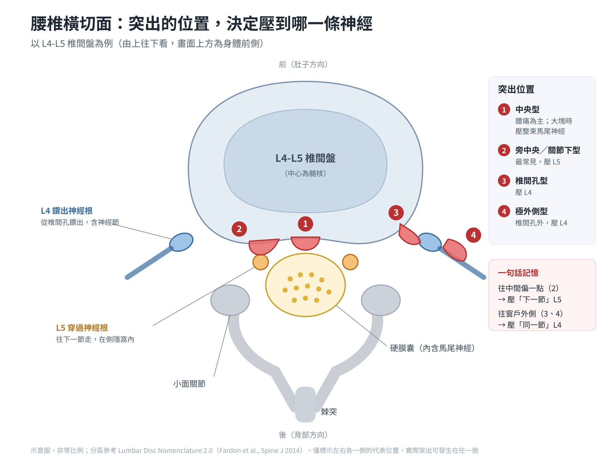
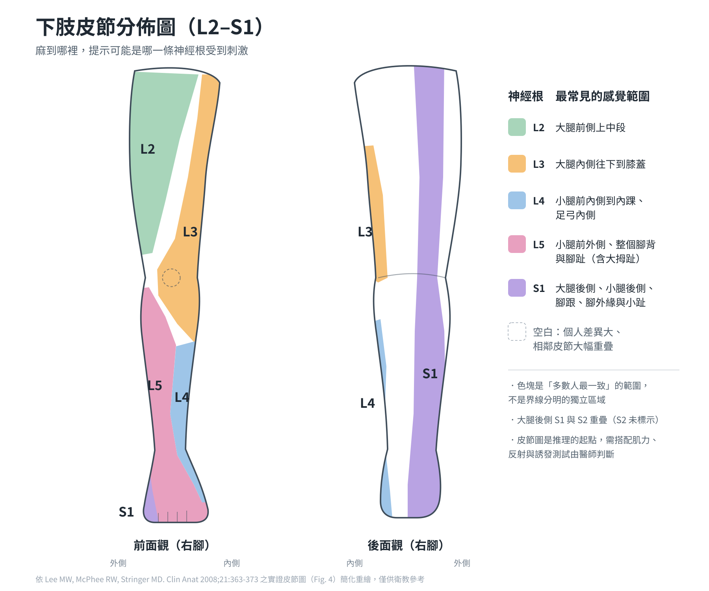

腿麻到哪裡，問題就在哪一節？腰椎椎間盤突出的神經壓迫地圖
阿德哥 45 歲，在物流倉庫負責搬貨，右腳痠麻已經一個多月。一坐進診間，他就把褲管捲起來，手指從屁股一路滑到小腿外側，最後停在腳背靠大拇趾的地方：「醫師，就是這條線在麻。我是不是椎間盤突出？」
（文中個案為綜合門診常見情況的示意，非特定患者。）
他已經拍過 X 光，也被告知「腰椎有點退化」。但他真正想知道的是：為什麼麻的是腳背，而不是整條腿？為什麼有時候咳嗽一下，那條線就像被電到？
這其實是很好的問題。腰椎椎間盤突出（Herniated Intervertebral Disc, HIVD）的症狀，常常不是「腰痛」本身，而是被壓到的那條神經，把訊號畫在腿上的某一條路線。麻到哪裡，是推理問題出在哪一節的重要線索。
之前寫過一篇〈腰椎椎間盤突出：整合針刀、乾針、中藥到核心訓練，給龍骨最完整的照顧〉，這篇換個角度，專心聊「神經壓迫的症狀與分佈」——讀完之後，你可以先對照自己的症狀地圖，再和醫師討論。
一、突出的位置，決定壓到哪一條神經
同樣是 L4-L5 椎間盤突出，有人麻腳背、有人麻小腿內側——差別在於椎間盤往哪個方向凸出去。
可以把腰椎想像成一棟大樓：中央的管道（椎管）裡，馬尾神經一路往下走；每一層樓，都有一對神經從側邊的窗戶（椎間孔）鑽出去。椎間盤就夾在每一層樓板之間——它往正中間凸、往斜後方凸，還是往窗戶那邊凸，碰到的就是不同的線。

| 突出方向 | 大約比例 | 壓到的神經 | 以 L4-L5 為例 |
|---|---|---|---|
| 旁中央／關節下型（paracentral / subarticular） | 最常見，約九成 | 往下一節走的「穿過神經根」 | 壓到 L5 |
| 椎間孔／極外側型（foraminal / far lateral） | 約一成 | 同一節「鑽出來」的神經根 | 壓到 L4 |
| 中央型（central） | 較少 | 可能以腰痛為主；大塊突出可能壓到整束馬尾神經 | 需留意馬尾症候群 |
所以看到報告寫「L4-L5 突出」時，我還是會回頭確認症狀地圖：影像告訴我「哪裡有突出」，症狀才告訴我「哪條神經在抱怨」。
極外側型還有一個特點：突出往往不大，但因為直接壓到神經節（dorsal root ganglion），腿痛可能特別劇烈、腰反而不太痛，也比較容易在一般影像中被忽略。
二、痛、麻、無力：神經發出的三種訊號
「坐骨神經痛」是很籠統的說法。臨床上我會把腿的不適拆成三種，因為它們代表的意義不一樣。
把神經根想成一條電線：
- 神經根痛（radicular pain）：電線外皮被磨破、又泡在發炎物質裡，開始「漏電」。痛感是電擊、射出去、一條線的感覺，常常一路超過膝蓋到小腿或腳。咳嗽、打噴嚏、彎腰時可能會突然加劇。
- 神經根病變（radiculopathy）：電線被壓到「訊號傳不過去」。表現是麻木、感覺變鈍、肌力下降、反射變弱。這一類症狀不一定痛，但我會看得更小心。
- 轉移痛（somatic referred pain）：不是電線的問題，而是椎間盤、小面關節、薦髂關節、肌肉本身的痛，被大腦「誤判地址」投射到臀部或大腿。特徵是悶痛、痠痠的、一大片說不清楚，關節來源的多半停在膝蓋以上。
但肌肉的肌痛點（trigger point）是重要例外：臀小肌、臀中肌的轉移痛可以沿著大腿外側、後側一路往下，臀小肌甚至可到小腿外側與腳踝，這種情況常被稱為「假性坐骨神經痛」。所以「有沒有過膝」只能當參考，還是要配合誘發測試、肌力、反射與觸診一起判斷。
| 區分點 | 神經根痛 | 神經根病變 | 轉移痛 |
|---|---|---|---|
| 感覺 | 電擊、射出去、燒灼 | 麻木、鈍、無力 | 悶、痠、重 |
| 範圍 | 一條線，常過膝 | 符合某一節皮節 | 一大片；關節來源多在膝上，臀小肌等肌痛點可過膝 |
| 檢查 | 神經張力測試可能誘發 | 肌力、感覺、反射可能異常 | 神經學檢查多半正常 |
三種訊號常常同時存在。一位椎間盤突出的患者，可能腰是椎間盤本身的轉移痛、小腿是神經根痛、腳背已經開始麻木——拆開來看，才知道每一塊該怎麼處理。
三、神經壓迫地圖：哪一節，麻哪裡
腰椎椎間盤突出有九成以上發生在 L4-L5 與 L5-S1，所以門診最常見的是 L5 與 S1 神經根的症狀；上腰段的突出較少見，症狀多在大腿前側到膝蓋，容易被誤以為是髖關節或膝蓋的問題。曾有研究分析發現，腰椎神經根痛有接近三分之二不完全照皮節走，其中以 S1 的分佈最一致——這也是臨床上常把皮節當成線索、而不是答案的原因。
每一條神經根都有自己負責的三件事：一塊皮膚的感覺（皮節，dermatome）、一組肌肉的力量（肌節，myotome），以及一個反射。三件事對得上，定位就更有把握。

| 神經根 | 痛麻分佈（皮節） | 可能變弱的動作（肌節） | 反射 | 常見誘發測試 |
|---|---|---|---|---|
| L2 | 大腿前側上中段（偏外側） | 抬腿（屈髖） | 無可靠反射 | 股神經張力測試 |
| L3 | 大腿內側往下到膝蓋（含膝蓋骨） | 伸膝、大腿內收 | 膝反射（部分） | 股神經張力測試 |
| L4 | 小腿前內側到內踝、足弓內側 | 伸膝、勾腳板（踝背屈） | 膝反射 | 股神經張力測試，有時直腿抬高 |
| L5 | 小腿前外側、整個腳背與腳趾（含大拇趾） | 翹大拇趾、勾腳板、髖外展（臀中肌） | 無可靠反射 | 直腿抬高測試 |
| S1 | 大腿後側、小腿後側、腳跟、腳外緣、腳底與小趾 | 墊腳尖（蹠屈）、臀大肌伸髖 | 跟腱反射 | 直腿抬高測試 |
回到阿德哥：麻在小腿外側到腳背、靠大拇趾，是典型的 L5 路線。搭配影像的突出位置，最常見的是 L4-L5 旁中央／關節下型突出，少數是 L5-S1 極外側型。
幾個你可以先留意的小線索：
- 用腳跟走路很吃力：可能與 L4、L5 有關。
- 墊腳尖走路、單腳墊腳尖做不起來：可能與 S1 有關。
臨床重點：看「獨立區」比看整張圖可靠
皮節的邊界是概略的，相鄰神經根的範圍本來就互相重疊，不是一條條固定的界線。不同教科書的皮節圖畫得不一樣是正常的，不代表哪一本有錯。
所以在床邊要判斷是不是單一一條神經根出問題時，我會優先檢查它的獨立區——也就是和鄰居重疊最少的地方：
| 神經根 | 獨立區 |
|---|---|
| L4 | 內踝 |
| L5 | 腳背 |
| S1 | 腳外側 |
獨立區的感覺變鈍，再搭配對應的肌力與反射異常，定位就更有把握。反過來說，只有一大片模糊的痠麻，就不適合硬套皮節圖去指定某一節。皮節圖是醫師推理的起點，不是自己對照就能下的診斷。
四、門診怎麼「對位」
1. 問診：請你用一根手指畫出來
「痛到哪裡」、「是痛還是麻」、「有沒有超過膝蓋」、「咳嗽、坐久、彎腰會不會更痛」——這幾個問題問完，往往已經可以收斂到一兩個可能的節段。
2. 神經張力測試
- 直腿抬高測試（Straight Leg Raise, SLR）：躺平、膝蓋打直，把腿慢慢抬起來。如果在約 30–70 度之間誘發出「小腿以下的線狀痛」，提示 L5、S1 神經根可能被刺激。只有大腿後側緊、或只有腰痛，不算陽性。
- 交叉直腿抬高：抬「不痛的那一隻腿」，卻誘發痛的那一側。直腿抬高陰性，比較不像椎間盤壓迫；交叉直腿抬高陽性，就很像——一個用來排除、一個用來確認，是我在臨床上常用的判斷原則。
- 股神經張力測試（Femoral Nerve Stretch Test）：趴著、彎膝往後拉，誘發大腿前側痛，提示 L2–L4 上腰段的問題。
3. 肌力、感覺、反射
對照第三段的表格，逐一檢查。痛可以等，肌力下降要更積極；每次回診都應重新評估肌力，確認沒有持續變弱。
五、腿麻不一定是椎間盤
神經從腰椎出來之後，還要穿過臀部、大腿、膝蓋、腳踝才到腳。一路上任何一個「隧道」太緊，都可能麻在類似的地方——這就是周邊神經纏套（nerve entrapment）。
一個很實用的分辨原則：神經根的症狀大致符合「皮節」，周邊神經的症狀則符合「那條神經的分支範圍」。例如同樣是腳背麻、勾腳板無力：
| 線索 | L5 神經根壓迫 | 腓骨頭腓神經壓迫 |
|---|---|---|
| 腰痛／咳嗽加劇 | 常有 | 通常沒有 |
| 直腿抬高 | 可能陽性 | 通常陰性 |
| 髖外展（臀中肌）力量 | 可能一起變弱 | 正常（臀中肌不歸腓神經管） |
| 壓膝蓋外下方 | 通常沒反應 | 可能誘發麻電感 |
臀部也是容易混淆的區域：
- 深臀症候群（Deep Gluteal Syndrome）：坐骨神經在梨狀肌附近被卡住，特徵是「坐不住」、坐久臀部深處痛，腰反而不太痛。詳見〈深臀症候群〉。
- 薦髂關節、小面關節：屬於「轉移痛」，可以痛到臀部、大腿，但神經學檢查多半正常。
也有一種情況是「雙重壓迫（double crush）」：腰椎和臀部同時有問題，這時兩邊都要評估。
六、出現這些症狀，請立刻就醫
大部分椎間盤突出可以先保守治療，但下面這幾種情況不能等，應盡快到急診或脊椎外科評估：
- 馬尾症候群（Cauda Equina Syndrome）：會陰、肛門周圍、大腿內側麻木（像坐在馬鞍上的範圍）；排尿困難、尿不出來或失禁；大便失禁；性功能突然改變。
- 雙側腿都開始麻或無力。
- 肌力持續變弱：例如腳尖開始拖地、墊不起腳尖、上樓梯腿軟。
- 伴隨發燒、不明原因體重減輕、癌症病史，或重大外傷後發生：需要先排除感染、腫瘤、骨折。
- 夜間痛到無法入睡、怎麼換姿勢都不會減輕。
這不是中醫或西醫的選擇題。遇到這些狀況，我會直接建議轉介，讓患者在最短時間內得到影像與外科評估。
至於確定是椎間盤突出之後可以怎麼處理，可以參考〈腰椎椎間盤突出的整體治療策略〉。
七、重點結論
- 突出方向決定壓到誰：旁中央／關節下型壓下一節的神經根，椎間孔／極外側型壓同一節的神經根。
- 痛、麻、無力意義不同：電擊線狀痛是神經被刺激，麻木與無力代表傳導受影響，肌力下降要密切追蹤。
- 記住五條路線：L2 大腿前側、L3 大腿內側到膝蓋、L4 小腿前內側到內踝、L5 小腿前外側到整個腳背、S1 大小腿後側到腳外緣與小趾。
- 影像要和症狀對得上：報告上的突出不一定就是症狀來源，也要排除周邊神經卡壓。
- 紅旗症狀不能等：會陰麻木、大小便異常、肌力持續變弱，請立即就醫。
如果你也有一條說不清楚的腿麻路線，建議先用手指把它畫出來，帶著這張「地圖」與醫師討論，配合理學檢查，必要時再安排影像，找出真正的壓迫點。
先找對哪一條線，再決定從哪一節下手。
本文僅供醫療衛生教育參考，不能取代醫師的診斷與治療。每個人的病情、體質與治療反應不同，文中提及的治療方式並非適用於所有人，亦不保證療效；侵入性治療可能伴隨副作用與風險。如有身體不適，請尋求合格醫療專業人員當面評估。
參考文獻
- Kreiner DS, et al. An evidence-based clinical guideline for the diagnosis and treatment of lumbar disc herniation with radiculopathy. Spine J. 2014;14(1):180-191. PubMed
- Lee MW, McPhee RW, Stringer MD. An evidence-based approach to human dermatomes. Clin Anat. 2008;21(5):363-373. PubMed
- Murphy DR, et al. Pain patterns and descriptions in patients with radicular pain: does the pain necessarily follow a specific dermatome? Chiropr Osteopat. 2009;17:9. PubMed
- Fardon DF, Williams AL, Dohring EJ, et al. Lumbar disc nomenclature: version 2.0. Recommendations of the combined task forces of the North American Spine Society, the American Society of Spine Radiology and the American Society of Neuroradiology. Spine J. 2014;14(11):2525-2545.